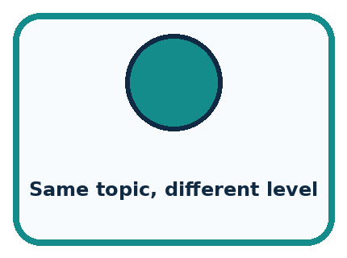
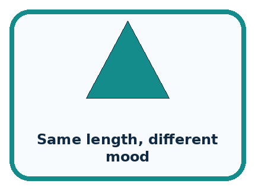
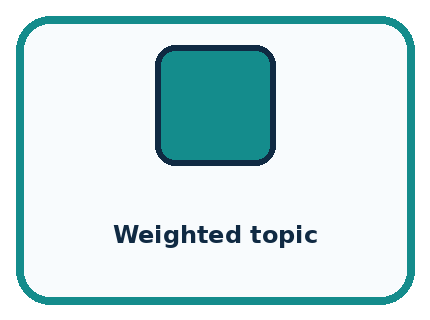

AI Academy · Level 1 · Grade 6 · Week 19 · Student lesson
Similarity
Learn to understand, design, build, test and explain AI systems responsibly.
Project: Helpful Classroom Sorter
THE CONNECTED WEEK
State the features. Then compare the scores.
Score Basic1, inspect tied Craft2 results, add a candidate and compare a new book task.
Keep one habit: Keep records fixed → name the weights → return the stated ties and limit suitability claims.
Main lesson · Section 1
Similar in which selected ways?
Calculate the declared score, handle ties explicitly and keep suitability requirements separate.
Start with a changed ranking
An item can win under one similarity rule and lose under another without changing at all. State the features, weights and candidate set before interpreting its score.
Retrieve the score-meaning question
A system gives an item two matching-feature points. Does that mean a two-thirds chance that the item is suitable? What must you read first?
Close your notes first. A rough first answer helps us choose the right starting point; it is not a score for your ability.
After trying, check the relevant lesson or ask your teacher. Change the part of your explanation that the evidence shows was wrong.
By the end, you can…
I can calculate similarity using explicitly selected features and a stated scoring rule.
I can explain how a change in feature weights can change the highest scoring item.
I can handle ties and missing features without claiming that a similarity score proves suitability.
Earlier wording, alternatives and picture transcripts
Your learning target
Remember before reading
Without opening the old lesson, explain one key idea from Confidence Is Not Correctness. Give an example and a mistake that the idea helps you avoid.
Without opening the old lesson, explain one key idea from Boundaries and 'Not Sure'. Give an example and a mistake that the idea helps you avoid.
Without opening the old lesson, explain one key idea from Learning from Examples. Give an example and a mistake that the idea helps you avoid.
Recommendations often begin by comparing selected traits, not whole objects.

LEARNING TARGET A reader wants mystery and short books. A has both traits, B only mystery, C only short. Score one point per matching trait. The reader now says short is essential. Explain how the decision should change.
Learner name:
Readiness for the connected explanation
This week’s end goal
By the end, I can calculate similarity under a declared feature rule and explain a changed ranking.
Main lesson · Section 2
Define Basic1 before scoring the cards
A similarity score belongs to its chosen features and comparison rule.
State the purpose and selected features
Two objects can be alike in colour and different in shape. A computer comparison needs a precise answer to similar in what way. Select features, state how their values are compared, and define what a larger score means.
The result belongs to that rule; it is not a universal judgment about the objects.
Read Basic1’s full target and candidate records
Our target card is red, round and smooth. Three candidate cards are A: red, round, rough; B: blue, square, smooth; C: red, square, rough.
First give one point for each feature that exactly matches the target and zero for each known mismatch. Add the points. Colour, shape and texture are the only selected features.
Keep unknown separate from mismatch
This paper exercise uses complete category values with agreed spelling. Real records can be missing or uncertain. Do not silently treat an unknown texture as a known mismatch or copy a value from the target.
First identify whether the information supports the comparison.
Name the comparison version
Call this first comparison Basic1. Name its target, the three feature fields and the one-point rule. Which missing field would stop a complete comparison under our classroom policy?
Earlier wording, alternatives and picture transcripts
PICTURE STORY
Look Closely Before You Explain
Pictures give clues; evidence tells us what the clues mean.

MYSTERY A book can be nearest to another by reading level, topic, length, or mood; the chosen features and scales determine the neighbor.
What do you notice?
Name three visible details without explaining them yet.
Circle the detail most connected to the system's decision.
Name one detail that may be decoration or distraction.
Make a first prediction and state the clue that supports it.
My observations, prediction, and evidence:
GOOD THINKING A prediction can change when stronger evidence appears.
A closer explanation
Main lesson · Section 3
Show each match contribution before adding
For Basic1, larger exact-match totals mean more matches under the declared rule.
Read the three candidate contributions
Three features contribute to a score
Check all feature-level points
A receives 1 for colour, 1 for shape and 0 for texture: total 2. B receives 0, 0 and 1: total 1. C receives 1, 0 and 0: total 1. Record the contributions, not just the totals, so another learner can check the computation.
Limit the original winning claim
A is most similar among these three candidates under this rule. That sentence names the candidate set and the rule.
It does not say A is identical to the target, has the right texture or will be the best choice for a task that needs smooth material.
Explain one score
Point to the input, the deciding step and the result in this week’s visual. Explain the same step in ordinary words. A picture helps when you can say what each part represents.
Earlier wording, alternatives and picture transcripts
VISUAL MECHANISM
Input → Process → Output
Follow the information instead of imagining magic inside the machine.


INPUT represented traits for candidate items
PROCESS compare distances using selected features
OUTPUT nearest or most similar items
CORE IDEA Recommendations often begin by comparing selected traits, not whole objects.
UNDER THE HOOD Similarity is a designed measure over represented features. Distance changes with feature selection, scaling, weighting, and missing values. Nearest does not mean identical, best, or fair.
Draw a fresh example with all three stages:
A closer explanation
Connect the picture and the explanation
Main lesson · Section 4
Compare selected traits and recommendation clues
Ask what the features represent and which task requirements a score might leave out.
Pictures paired with their evidence


The case to investigate
CASE 1 — Same topic, different level Clue: close on topic. Meaning: far on reading level.


The case to investigate
CASE 2 — Same length, different mood Clue: close on length. Meaning: far on mood.


The case to investigate
CASE 3 — Weighted topic Clue: topic counts more. Meaning: neighbor changes.

Discuss the confusing pair
Which two pictures are easiest to confuse? What evidence separates them?
Keep the limit in view
BOUNDARY Similarity is a tool designed for a purpose, not a universal property.
Earlier wording, alternatives and picture transcripts
PICTURE GALLERY
Four Cases, Four Clues
Use the visual cue, then read the evidence carefully.
CASE 1 — Same topic, different level Clue: close on topic. Meaning: far on reading level.
CASE 2 — Same length, different mood Clue: close on length. Meaning: far on mood.
CASE 3 — Weighted topic Clue: topic counts more. Meaning: neighbor changes.
CASE 4 — Missing feature Clue: distance incomplete. Meaning: need policy.
Change one thing in the pictured case
Change: Keep original weights but change the target texture to rough.
Prediction: C scores 3; A and B each score 1.
Reason: C now matches all three target features; the others lose their smooth-texture match.
Main lesson · Section 6
A declared comparison can have more than one winner
Keep the Craft2 dataset and each weight version explicit.
Craft2’s target, records and two declared rules
This separate worked dataset is Craft2. Its A, B and C records are printed below; use these records for this case. Return every highest scorer under each stated comparison.
A fictional craft-card matcher compares each candidate with a target.
Target: red, round, smooth. A: red,square,smooth. B: blue,round,smooth. C: red,round,rough.
Initially each exact feature match scores 1; return all highest scorers.
For the second comparison only, colour and shape matches score 1 each and a texture match scores 3.
Compare the tied score patterns


Trace both weighted results


Explain the tie policy and changed priorities
Similarity is defined by the chosen representation and weights. The cards did not change when texture gained weight; the comparison rule did. Two high scores need not mean two identical cards.
A complete rule also says what to do with tied scores, rather than choosing whichever appears first by accident.
Predict after changing the target texture
Before checking, use Craft2’s original one-point weights but change the target texture from smooth to rough. Leave its colour and shape unchanged. Recalculate every contribution and return all highest scorers.
Check the changed-target scores


Limit similarity to represented properties
A high feature-match score does not establish usefulness or suitability beyond the features represented.
Explain C’s changed score
Read the labelled picture: Point to the matches supporting C’s new score and explain why there is no tie.
Earlier wording, alternatives and picture transcripts
WORKED EXAMPLE
Watch the Reasoning, Not Just the Answer
Every step connects a claim to observable evidence.

CASE A book can be nearest to another by reading level, topic, length, or mood; the chosen features and scales determine the neighbor.
STEP 1 — OBSERVE represented traits for candidate items
STEP 2 — TRACE compare distances using selected features
STEP 3 — CONCLUDE nearest or most similar items
MODEL REASONING Plot items consistently, define how each axis is measured, and compare distances. A different axis or weight can change the nearest item without any item moving in the real world.
DO NOT OVERCLAIM Similarity is a tool designed for a purpose, not a universal property.
What new evidence could change this answer?
A closer explanation
| Candidate | Colour and shape points | Texture worth 3 points | New total |
|---|---|---|---|
| A | 1 + 1 | 0 | 2 |
| B | 0 + 0 | 3 | 3 |
| C | 1 + 0 | 0 | 1 |
Suppose texture matters more for the stated comparison. Keep colour and shape worth one point each, but give three points for a texture match. B now scores 3 and becomes the unique highest scoring candidate.
No card changed; the rule changed. Record both versions rather than overwriting the first result.
Weights express priorities in this designed rule. They need a reason connected to the task and should be set before inspecting the final evaluation results. A convenient winner does not justify a weight.
If smooth texture is required without exception, use a requirement check rather than hoping a weighted score will always enforce it.
Learn from the worked case
Cover the result before checking it. Say what is given, choose the procedure, and follow one step at a time. Then uncover the result and explain your first mismatch. Ask why a step is allowed, not only what number it produces.
A pictorial worked case: Similarity
The facts we will use


Read the picture one step at a time
Why this result follows
What this example does not establish
Change one thing: Keep original weights but change the target texture to rough. Predict the result before checking the explanation. What remains the same?
Main lesson · Section 8
Practise: add a candidate and return every tied winner
First use Basic1’s one-point rule, then make texture worth 3 as a separately named comparison.
Basic1 and the new D record
Return to Basic1 for this practice: target red, round, smooth; A red, round, rough; B blue, square, smooth; C red, square, rough. The additional D is blue, round, smooth. Keep these records separate from Craft2’s records.
Add candidate D: blue, round, smooth. Under the original one-point rule, D scores 2, tying A. Our policy is to return every candidate with the largest score, so the result is A and D.
Returning only the first row would silently introduce a different policy.
Pause for a missing comparison value
If a required comparison value is missing, our classroom policy pauses the final ranking and requests the missing value. Retain the known contributions and the reason for the pause.
A different policy could be designed, but it would need to be explicit and checked for its effects. Unknown and different are separate states.
Use W2 to explain the changed winner
Use workbook W2 for the connected example “Similarity and selected features”. First fill the input and rule boxes. Try the middle steps before asking for a hint. After a hint, try the next step yourself.
| Plan | Do | Check |
|---|---|---|
| What is given? Which rule or procedure applies? | Record each intermediate step. | Does the result follow? What remains unknown? |
Explain your trace to a partner. Your partner points to one step to check. Swap roles on the next case. Each person writes their own explanation.
Challenge a universal meaning of similar
Use the worked case for Similarity and selected features. Proposed explanation: “Similar has one objective meaning for every task”. Decide whether this explanation is supported.
Point to the step or supplied fact that decides; explain your repair if needed.
Answer on your own before discussion. If you are unsure, say which step you need help with.
Return to Craft2’s changed-target explanation
Point to the matches supporting C’s new score and explain why there is no tie.
This is supported practice. Keep the separately named independent case for an attempt before feedback.
Earlier wording, alternatives and picture transcripts
GUIDED PRACTICE
Try It, Check It, Explain It
Use support now so you can succeed independently later.

Explain how the picture story demonstrates this idea: Recommendations often begin by comparing selected traits, not whole objects.
Use a fresh example to explain similarity.
Trace a new input → process → output example.
Find and repair the error in: Two items have one permanent similarity score.
Invent one edge case and name the safe response.
PARTNER CHECK Point to the evidence. Do not accept an answer that only repeats the vocabulary word.
A closer explanation
Practise with less help: Explain a changed winner
Check your reasoning
Explain the picture
Main lesson · Section 7
Qualify a claim about the “closest” item
Use the rule, candidate set and tie policy when explaining a winner.
Ask which features were left out
Feature selection leaves information out. A card comparison ignores size and material unless those are included. A book comparison using topic and format may ignore language or reading difficulty.
More features are not automatically better: irrelevant or repeatedly copied features can change a score without improving the decision.
State the full scoring and missing-value policy
A useful report states the purpose, candidates, selected features, weights, missing-value policy and tie policy. Check the proposed method on relevant cases that include ties and imperfect records.
If it supports a recommendation, keep the explanation limited to what was actually compared.
Repair the objective-winner claim after adding D
CLAIM A The nearest item is automatically the best recommendation.
CLAIM B Two items have one permanent similarity score.
STRONG ANSWER FRAME I claim ______ because the evidence shows ______. The process is ______. One limit is ______.
Earlier wording, alternatives and picture transcripts
COMPARE
Same Result, Different Reason
A comparison helps reveal the true concept boundary.
| Case | Evidence | What it shows |
|---|---|---|
| Same topic, different level | close on topic | far on reading level |
| Same length, different mood | close on length | far on mood |
| Weighted topic | topic counts more | neighbor changes |
| Missing feature | distance incomplete | need policy |
Repair two tempting claims
Repair:
Repair:
A closer explanation
Main lesson · Section 9
Investigate two different trait-map neighbours
Use a fully specified map, two declared priorities and an explicit tie and missing-value policy.
Your map and comparison rules
Draw a trait map with rows red/blue and columns round/square. The target is red,round. Put A=red,square; B=blue,round; C=blue,square in their cells. Start with one point per exact feature match, returning all highest totals. Then compare two policies declared before scoring: colour-priority gives colour 2 and shape 1; shape-priority gives colour 1 and shape 2.
Predict, score and compare priorities
Predict all totals and winners under the three stated policies before checking with a partner. Explain how A and B become different highest scorers under the two priorities. For an added red card whose shape is unreadable, retain the known colour contribution and request its shape before final ranking. These points are feature-match scores, not chances of suitability.
Keep a normal case and an edge case clearly separated.
Record what happened—even when it does not match your prediction.
Explain the result, one limitation, and the next useful test.
Keep rule versions and limits
| Case | Prediction | Observed result | What it means |
|---|---|---|---|
| Normal | |||
| Edge |
Before trying: what do I expect, and why? While trying: which step could first go wrong? Afterwards: what did I actually observe, and what should change? Keep “not run” if you only traced the procedure.
Earlier wording, alternatives and picture transcripts
EXPLORER LAB
Trait Map Neighbors
Predict first, test honestly, and explain what the evidence means.

State your prediction before the result is known.
Complete the task: Create a trait map and find two different 'nearest' items.
INDEPENDENCE After support is removed, repeat the proof with a fresh case.
Plan → try → check
Main lesson · Section 14
Try alone: compare the new book records
Use the topic, format and language fields and return all tied highest scorers before considering a hard requirement.
The new target, records and weight change
A target book has topic space, format comic and language English. Candidates are J: space, prose, English; K: animals, comic, English; L: space, comic, Spanish. Give 1 point per exact match and return all tied highest scorers.
Then make topic worth 3 points while keeping the other weights at 1. Report both sets of totals and winners. Explain why a winner may still fail a requirement to read English.
Keep one first attempt
Attempt this case before feedback. Record any help. Earlier examples below are further practice; a case already practised with feedback cannot establish fresh transfer.
Your teacher has the independent answer and scoring criteria. Complete the matching workbook week to keep your practice evidence together.
Use feedback afterwards
Attempt the independent case before hints. Record whether you worked alone, used a hint or followed a model. After feedback, fix the first unsupported step and explain why it changed.
A later check uses a changed case, not a copied answer.
Earlier wording, alternatives and picture transcripts
Independent case: Transfer the comparison to books
Week 19 Independent application
Close the worked explanation. Apply the idea to this different question without copying.
Compare books using topic only. Book A is about space with a red cover; B is about space with a blue cover; C is about dogs with a red cover. Which matches A best?
My answer, with a trace, calculation or supporting evidence
Create and test
Change one relevant detail. Predict the result before testing. Include a boundary or missing-information case when it helps reveal a limit.
My changed input and expected result
Connect to your project
Choose two useful item traits for similarity-based sorting and explain why each deserves its weight.
The evidence I will keep
Transfer practice from the original programme
A reader wants mystery and short books. A has both traits, B only mystery, C only short. Score one point per matching trait. The reader now says short is essential. Explain how the decision should change.
Use feedback to improve
Main lesson · Section 11
Declare your sorter’s similarity rule before using it
Give each feature and weight a task-related reason and state tie behaviour.
This week’s project decision
THIS WEEK'S CHECKPOINT Choose two useful item traits for similarity-based sorting and explain why each deserves its weight.
Declare sorter similarity features, weights and tie behavior before using scores to explain recommendations.
Plan traits, scoring checks and review
What real classroom need does this serve?
What information is necessary—and what should stay private?
What happens inside the process?
What normal and edge cases will you test?
When should it say not sure or ask a person?
Keep task-specific similarity limited
RESPONSIBLE DESIGN Similarity is a tool designed for a purpose, not a universal property.
Earlier wording, alternatives and picture transcripts
PROJECT
Helpful Classroom Sorter
Build one coherent system across the year, one evidence-based decision at a time.


My project decision:
Evidence for your project
Main lesson · Section 16
Finish: explain the score and its limits
Close your notes and state the feature contributions, rule version, tie result and missing requirement.
Your exit explanation
Close your notes. Explain this goal in your own words: Calculate similarity using explicitly selected features and a stated scoring rule
Choose support and revisit later
If you are unsure, return to the worked picture and explain one arrow. If you are ready, change an input or assumption and justify your prediction.
Save your workbook evidence. At the next review, try a different case before opening your old answer.
Reference bank and extra practice
Choose the reference that helps your next step.
Your quick word guide
Reference · Section 5
Your quick word guide
Use the words to explain a particular step, record or limit.
Core vocabulary
| Word | Meaning | My example |
|---|---|---|
| similarity | degree of likeness under chosen traits | |
| distance | numeric or ordered difference between representations | |
| weight | importance assigned to a feature | |
| nearest neighbor | item with smallest chosen distance |
Terms for the connected explanation
| Word | Meaning |
|---|---|
| Feature match | Agreement between two recorded values for a selected feature |
| Tie | Two or more candidates sharing the same score |
| Candidate | An item being considered in a comparison |
Repair a claim using a word
CLAIM TO REPAIR The nearest item is automatically the best recommendation.
Use one vocabulary word and one piece of evidence to repair it:
Earlier wording, alternatives and picture transcripts
VOCABULARY
Words You Can See and Use
The badge is a memory cue; the definition does the real thinking work.


Misconception detective
WORD POWER A strong definition helps you decide something in a new case.
Words used in the closer explanation
Choose a stronger thinking challenge
Reference · Section 10
Choose a stronger thinking challenge
Choose the next useful challenge rather than treating the whole ladder as compulsory.
Pick your next step
RECALL Define similarity.
EXPLAIN Recommendations often begin by comparing selected traits, not whole objects.
TRACE Show the input, process, and output.
DIAGNOSE Repair: The nearest item is automatically the best recommendation.
TRANSFER Apply the idea to a new home or classroom case.
CREATE Design one revealing test.
DEFEND Give a claim, evidence, mechanism, limit, and safe action.
Earlier wording, alternatives and picture transcripts
PRACTICE LADDER
Climb from Recall to Defense
Each step asks for a stronger kind of understanding.

RETRY RULE A coached answer becomes mastery only after you solve a different case independently.
Reference: check your explanation
Reference · Section 12
Reference: check your explanation
Use after practice. Transfer the comparison to books is the selected independent case.
Check the evidence and its limit
□ Name or draw the fresh case.
□ Trace input, process, and output.
□ State the conclusion and strongest evidence.
□ Name one limit, failure, missing clue, or fairness/privacy concern.
□ Explain one safe next action or improvement.
Record support
My level: □ Not yet □ With one hint □ Independently □ I can teach it
Earlier wording, alternatives and picture transcripts
MASTERY
Checklist for explaining this week’s idea
Use after practice. Transfer the comparison to books is the selected independent case.

EXPLANATION CHECK State the candidates, selected traits, feature contributions, weights and tie policy; preserve unknown values and distinguish a score from a hard suitability requirement.
Independent evidence:
SELF-CHECK Plot items consistently, define how each axis is measured, and compare distances. A different axis or weight can change the nearest item without any item moving in the real world.
NEXT BRIDGE Carry today's evidence habit into: Recommendations.
Extra practice: Count matching book traits
Reference · Section 13
Extra practice: Count matching book traits
Try the question before opening its worked explanation.
Read the supplied case and question
Book A has animals and adventure; B has animals only; C has neither. A reader wants both traits.
Rank by number of matching traits.
Your explanation
Which detail supports the answer, and why does it matter?
Check after trying
A scores 2, B 1, C 0. Ranking depends on the chosen traits; it is not a universal measure of book quality.
| Evidence or stage | Value or result |
|---|---|
| Book A | 2 |
| Book B | 1 |
| Book C | 0 |
Earlier wording, alternatives and picture transcripts
Week 19 Worked case
Use the supplied details to practise the weekly concept before attempting the independent question. This case extends the illustrated lesson.
The situation
The question
Worked explanation
Explain it in your own words
Trace the supplied case visually
Count matching book traits
Book A has animals and adventure; B has animals only; C has neither. A reader wants both traits.
Rank by number of matching traits.
A scores 2, B 1, C 0. Ranking depends on the chosen traits; it is not a universal measure of book quality.
Reference: original lesson checklist
Reference · Section 15
Reference: original lesson checklist
Use an additional checklist when it helps inspect your explanation.
Targets and evidence
| By the end, I can | How I will show it |
|---|---|
| Calculate similarity using explicitly selected features and a stated scoring rule | Explain the deciding step, show a trace or test, and state one limit. |
| Explain how a change in feature weights can change the highest scoring item | Explain the deciding step, show a trace or test, and state one limit. |
| Handle ties and missing features without claiming that a similarity score proves suitability | Explain the deciding step, show a trace or test, and state one limit. |
Keep your route and first prediction
Remember → watch and explain → try with help → investigate → try independently → keep project evidence. Your teacher may spread this lesson across several classes.
Keep your first prediction. Compare it with what the evidence shows and explain any change.
Earlier wording, alternatives and picture transcripts
Start with this question: A fictional craft-card matcher compares each candidate with a target.
Extra practice: pictures, repair and feedback
Reference · Section 17
Extra practice: pictures, repair and feedback
Attempt each question before opening its explanation. Use one browser or paper copy.
First supported question
A fictional craft-card matcher compares each candidate with a target.
Which labelled step matches this detail? New scores A=4, B=4, C=2; A and B remain tied.
1. Target features
2. Initial result
3. Texture weight 3
4. Equal weights
Hint if needed: Read the steps in the pictorial case. Match the supplied detail to the stage that performs or records it.
Practice 1: explain the deciding evidence
Check the first explanation
After your attempt, compare with the supported explanation: Texture weight 3 New scores A=4, B=4, C=2; A and B remain tied. Similarity is defined by the chosen representation and weights.
The cards did not change when texture gained weight; the comparison rule did. Two high scores need not mean two identical cards.
A complete rule also says what to do with tied scores, rather than choosing whichever appears first by accident.
Changed-case question
Changed-case practice: Keep original weights but change the target texture to rough. Which conclusion is supported by the supplied facts?
1. We can decide the result without examining the changed input or the procedure.
2. This one example guarantees correct results for every future input.
3. C scores 3; A and B each score 1.
Hint if needed: Use the changed condition and the deciding step in the pictorial trace. The answer must say what follows from those facts.
Practice 2: explain the deciding evidence
Check the changed case
After your attempt, compare with the supported explanation: C scores 3; A and B each score 1. C now matches all three target features; the others lose their smooth-texture match.
Repair and save your work
Review Confidence Is Not Correctness (ai-1/18). Goal: Distinguish a confidence claim from evidence that a prediction was correct. Short practice: Was the unknown label guaranteed correct because its confidence was 80%?.
Return to this week and explain what you changed.
Review Boundaries and 'Not Sure' (ai-1/16). Goal: Identify a specific source of uncertainty and explain how it affects a prediction. Short practice: Which original block needs a better width before accepting or rejecting it?
What should the reviewer do?. Return to this week and explain what you changed.
Review Learning from Examples (ai-1/13). Goal: Fit a threshold by tracing predictions and counting disagreements for every candidate. Short practice: Which new measured length would reveal disagreement between the candidates?.
Return to this week and explain what you changed.
Use Download completed work in the hosted lesson to export your answers, reflections, practice feedback and code-run evidence. Open the HTML copy to read or print it.
Drafts stay in this browser when storage is available; clear drafts on a shared device.
Earlier wording, alternatives and picture transcripts
Use this supported practice once, in the browser or on paper. Keep the reserved independent assessment for a separate first attempt before teacher feedback.
Repair a missing building block
Keep your completed work
Reference: the six-picture journey
Reference · Section 18
Reference: the six-picture journey
Revisit the picture that serves the current question; key diagrams already sit beside the main explanation.
01. Similarity: the case


A fictional craft-card matcher compares each candidate with a target. Supplied facts: Target: red, round, smooth. A: red,square,smooth. B: blue,round,smooth. C: red,round,rough.
Initially each exact feature match scores 1; return all highest scorers. For the second comparison only, colour and shape matches score 1 each and a texture match scores 3.
Point to the given fact that matters most. Explain why it matters.
02. Follow the deciding steps
Target features: Compare colour, shape and texture separately. → Equal weights: A matches colour+texture=2; B shape+texture=2; C colour+shape=2. → Initial result: All three tie at 2. → Texture weight 3: New scores A=4, B=4, C=2; A and B remain tied.
Point to each numbered stage and explain which recorded input it uses.
03. Declared weights change similarity
Declared weights change similarity. A: All weights 1 = 2, Texture weight 3 = 4. B: All weights 1 = 2, Texture weight 3 = 4. C: All weights 1 = 2, Texture weight 3 = 2.
Read the labels and values. Explain the relationship the model shows.
04. Change one thing. Trace what follows.
Original case: New scores A=4, B=4, C=2; A and B remain tied. Changed condition: Keep original weights but change the target texture to rough. Expected result: C scores 3; A and B each score 1.
Reason: C now matches all three target features; the others lose their smooth-texture match.
Predict before checking the worked changed-case result. Name what changed and what the supplied facts allow you to conclude.
05. Connect the explanation to its limit


Similarity is defined by the chosen representation and weights. The cards did not change when texture gained weight; the comparison rule did. Two high scores need not mean two identical cards.
A complete rule also says what to do with tied scores, rather than choosing whichever appears first by accident. Limit: A high feature-match score does not establish usefulness or suitability beyond the features represented.
Explain the case, then point to a limit on the claim.
06. Make the idea visible in your project


Declare sorter similarity features, weights and tie behavior before using scores to explain recommendations. Draw your input, deciding step, result and limit.
Supported question: Point to the matches supporting C’s new score and explain why there is no tie.
Draw your project trace and justify the deciding step using evidence.